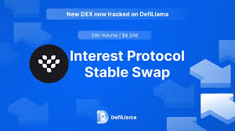

Decoding the Dark Art of DeFi Fees: My Swap DefiLlama Saga
Okay, let's be honest. Trying to navigate the world of decentralized finance (DeFi) feels a bit like trying to assemble IKEA furniture without the instructions – except the instructions are written in Klingon, and the Allen wrench is mysteriously missing. And the stakes? Well, let's just say they're higher than a wobbly Billy bookcase.
I recently found myself knee-deep in a DeFi swap, trying to shift some stablecoins around. My goal? Simple enough: move some money. My reality? A whirlwind of gas fees, slippage, and a healthy dose of existential dread about whether I’d actually end up losing money in the process. This is where DefiLlama's transaction fee analysis came to my rescue, or at least that’s what I hoped.
DefiLlama, for the uninitiated (and even for the initiated sometimes, let's be honest), is a fantastic aggregator that gives you a bird’s-eye view of the DeFi ecosystem. I’ve become rather reliant on it – mainly to avoid those Klingon instructions mentioned above. But looking at transaction fees specifically? That's a rabbit hole worthy of Alice herself.
Initially, I was pretty naive. I just assumed a lower fee meant a better deal, right? Wrong. So very, very wrong. I quickly learned that it’s not just about the raw number; it's about the context. Are those low fees masking some other hidden cost? Are they offering a ridiculously low rate on a smaller volume just to pull you in?
I started digging into DefiLlama's data, comparing different protocols and their transaction fees across various tokens. It was like comparing apples, oranges, and… well, space rocks. Some protocols clearly state their fees upfront, neat and tidy. Others? It felt like deciphering a cryptic message from a particularly mischievous sphinx.
The more I looked, the more questions I had. Why were fees so volatile? Was it network congestion? The whims of the gods of blockchain? Or something more sinister, like a hidden cabal of DeFi overlords manipulating the market? (Okay, probably not the last one, but a guy can dream, right?)

There were moments of pure frustration. Hours spent poring over charts and graphs only to realize that I was missing a crucial piece of information. I felt like that meme of the guy desperately searching for a specific file on his computer – except my file was financial freedom, and my computer was the chaotic, ever-shifting landscape of DeFi.
Yet, amidst the confusion and the occasional swear word (don't judge), there was a glimmer of understanding. DefiLlama, with its detailed breakdown of fees and its ability to compare different protocols, actually became invaluable. It allowed me to make more informed decisions, to understand the trade-offs involved, and to avoid those hidden pitfalls lurking beneath the surface.
So, what did I learn from my journey? Well, mostly that DeFi isn’t just about the thrill of the decentralized, it's about the meticulous investigation. It’s about understanding that low fees aren't always better and high fees aren't always bad. It’s about context, research, and a healthy dose of skepticism. And, perhaps most importantly, it's about remembering to take a deep breath and not lose your mind amidst the Klingon instructions (metaphorically speaking, of course). It's a learning process, and I suspect my journey is far from over. But at least now, I'm slightly less afraid of the Allen wrench… mostly.
The Great DeFi Llama Fee Mystery: Why is my Swap Costing Me My Firstborn? (Almost)
Okay, so maybe I'm exaggerating about the firstborn. But last week, I was trying to swap some ridiculously named token (something involving "moon" and "shiba," naturally) on DeFiLlama, and the transaction fee nearly gave me a heart attack. I'm talking more than the price of a decent cup of coffee – we're venturing into "slightly-used-bicycle" territory here. It got me thinking: what actually affects these fees? Because, let’s be honest, understanding DeFi fees is about as fun as watching paint dry...if that paint was drying slowly in a blizzard.
DeFiLlama, for those uninitiated, is essentially a dashboard that aggregates data across various decentralized finance platforms. It doesn't directly process the swaps, it just shows you where to go and what the estimated price is. So, the fees you see aren't magically conjured by Llama-shaped algorithms (though that would be cool). They come from the underlying blockchain and the specific decentralized exchange (DEX) you're using.
Now, the biggest culprit? Gas fees. Think of gas fees as the blockchain’s tollbooth. Every transaction needs energy to be processed, and that energy comes in the form of these fees, usually paid in the native token of the blockchain (like ETH on Ethereum). The higher the demand on the network (think peak trading hours or a super popular new token launch), the higher the gas prices. It’s supply and demand in its purest, most annoying form. Ever try to grab an Uber during rush hour? Same principle. Except instead of surge pricing, it’s surge gas pricing.
Beyond gas fees, the type of DEX you choose plays a significant role. Some DEXs use automated market makers (AMMs) like Uniswap, which have their own fee structures built-in. These fees are often a percentage of the trade amount, usually a few percentage points. Others might have different fee models altogether. It’s like choosing between a fancy restaurant with a hefty service charge and a no-frills diner – both get you fed, but one will leave you with more (or less) in your wallet.
Then there’s the matter of slippage. This is the difference between the expected price of your swap and the actual price when it's executed. Slippage is more likely when trading less liquid assets – think trying to trade a tiny, obscure token; you're more likely to get a slightly worse deal. It’s like bargaining in a crowded souk; if you’re buying something unique, you’re less likely to get the best price.
Now, this is where I get a little conflicted. Part of me loves the transparency of DeFi. You see the fees upfront (mostly!), and it's all on the blockchain for everyone to see. No hidden charges, no shady dealings… mostly. But the other part of me still groans internally when I see those fluctuating fees. It's like a mini-rollercoaster ride of financial anxiety, especially when you're dealing with smaller amounts.
So, what did I learn from my near-firstborn-sacrificing DeFiLlama experience? Well, a few things: always check the gas fees before you commit to a swap, research different DEXs to find the best deal (a bit like comparing flights!), and maybe avoid trading those "moon" and "shiba" tokens late at night when gas fees are likely to be higher. Oh, and maybe invest in a slightly-used bicycle for emergency situations.
The journey of understanding DeFi fees isn't a destination, it's a continuous learning process. It's a reminder that the decentralized world isn’t without its own set of complexities and that sometimes, a little bit of homework can save you a lot of (literal) heartache. And maybe, just maybe, it'll save your firstborn, too.
The Great DeFiLlama Gas Guzzling Gamble: Or, Why My Crypto Dreams Keep Ending in Tears (and High Transaction Fees)
Okay, confession time. I once spent a good hour meticulously comparing yields on various DeFi protocols, all fueled by lukewarm coffee and the unwavering belief that I was about to become a DeFi wizard. I'd even fired up DeFiLlama, my go-to oracle for all things yield farming, to find the juiciest APRs. I was this close to making a move, a bold, calculated swap that would catapult my meager crypto holdings into… well, something slightly less meager. Then, the gas fees hit me. Like a rogue wave wiping out a poorly-constructed sandcastle. My meticulously planned financial maneuver ended up costing more than the potential profit. Ouch.
That, my friends, is the DeFiLlama dilemma in a nutshell. The site is fantastic – a real-time dashboard of the DeFi world, showing you APRs, TVL (Total Value Locked), and all sorts of other vital stats. It's essentially the Bloomberg Terminal for crypto degens, right? But the information is only half the equation. Knowing where to put your money is only useful if you also know how much it's going to cost to actually move it. And that's where things get messy.
DeFiLlama doesn’t (and realistically, can't) give you real-time gas estimations. It provides snapshots of the DeFi landscape, beautiful charts and numbers, but it can't predict the volatile whims of the Ethereum network. One minute the gas price is a reasonable $5, the next it's a heart-stopping $50, enough to make you question all your life choices. Imagine trying to plan a road trip using a map that’s accurate only sometimes. Frustrating, right?
Now, I know some of you savvy DeFi veterans are probably rolling your eyes. "Duh," you’re thinking, "just use a gas estimation tool!" And you're right, of course. There are plenty of those around. But even then, it’s a bit of a dance. You’re constantly switching between DeFiLlama, your wallet, and a gas estimator, trying to time the market perfectly – a task that’s about as predictable as predicting the next meme coin craze.
This isn't just a minor inconvenience; it’s a fundamental friction point in the DeFi experience. It’s a constant reminder that, despite the promise of decentralized finance, we're still heavily reliant on a centralized network (Ethereum) with its inherent volatility and fees. It feels almost… ironic? We're chasing decentralized yields while simultaneously being held hostage by the price of gas.
And that’s where my little existential crisis begins. Is it worth the hassle? Should I even bother with yield farming on Ethereum given the current gas fees? A part of me screams "YES! Think of the APYs!" while another, more rational (and significantly less fun) part whispers, "Maybe stick to staking for now, dude." It’s a constant internal debate, a tug-of-war between my greed and my sanity.
So, where does that leave us? Honestly, I don't have a definitive answer. There’s no magic bullet, no perfect solution. But perhaps the journey is the point, the constant dance between data, prediction, and the unpredictable nature of the blockchain. This article started as a frustrated rant about gas fees, but it’s become a reflection on the ongoing evolution of DeFi, its inherent complexities, and the constant need for adaptability and a healthy dose of patience. Maybe, just maybe, next time I'll remember to check the gas price before I start drooling over those APRs on DeFiLlama. But there's always a next time, right? The allure of those potential yields is just too strong. Someone hold my beer (and my crypto).
DeFi Llama's Fees vs. Reality: A Wild Goose Chase (or Was It?)
Okay, let's be honest. Trying to figure out the actual transaction fees in the DeFi world feels a bit like navigating a swamp blindfolded, while simultaneously juggling rubber chickens. I mean, I’ve spent hours poring over charts, comparing numbers, and generally feeling more confused than a toddler in a candy store. It all started innocently enough. I was planning a small swap, you know, the kind where you’re not moving millions, just a few hundred bucks. And I thought, "Hey, DeFiLlama shows me the fees, right? That’s gotta be accurate, otherwise, what's the point?" Turns out, it's…complicated.
DeFiLlama, for the uninitiated, is this fantastic aggregator site that shows you all sorts of DeFi data, including fees. Super helpful, right? Mostly. But comparing the fees it displays to the actual fees charged by, say, Uniswap or SushiSwap? That’s where the rubber chickens start flying.
My initial naiveté quickly dissolved. I quickly realized that DeFiLlama's fee representation is, let's say, a summary. It gives you a general idea, a broad stroke, but misses the intricate details. Think of it like a Michelin star restaurant menu versus the actual price including tax, service charge, and that sneaky "optional" amuse-bouche that somehow ends up costing as much as the main course.
The thing is, DEX fees are dynamic. They change based on the network congestion, the specific token pair, and even the time of day. DeFiLlama, understandably, can’t capture all this real-time volatility. It’s like trying to photograph a hummingbird in flight – you get a general impression, but sharp detail is a challenge. So, while it’s a fantastic resource for getting a feel for things, it shouldn't be your only reference point for precise fee calculations.
And then there's the matter of slippage. Oh, slippage. That sneaky little fee that always seems to catch you off guard. DeFiLlama attempts to factor it in, but, again, it’s an estimate. The actual slippage depends on the current market depth, order size, and, well, the whims of the market gods. Trying to predict slippage accurately is like predicting the weather in Scotland – good luck with that.
So, what did I learn from this whole odyssey? Well, for starters, DeFiLlama is a powerful tool, but it’s not a crystal ball. It's a helpful guide, not a definitive answer. I also learned to be incredibly wary of trusting aggregated data blindly – a lesson applicable far beyond the world of decentralized finance. It's like trusting Yelp reviews without reading between the lines – some are genuine, others... less so.
Ultimately, the quest to compare DeFiLlama's fee estimates with those of individual DEXs felt a bit like a wild goose chase. I didn't get the precise, pixel-perfect answer I was hoping for. But the journey itself, the realization of the complexity and inherent dynamism of DeFi fees, was far more valuable than just a simple number. It taught me patience, skepticism, and a newfound appreciation for the often-overlooked nuances of decentralized finance. Perhaps I should've just stuck to rubber chickens. But hey, at least I learned something. And maybe next time, I’ll just stick to using a specific DEX’s fee calculator instead of trying to reverse-engineer things from a generalized platform. Small victories, right?
Bridging the Gap (and My Confusion): How Bridges Affect DeFiLlama's Swap Fees
Okay, confession time. I'm not a Swap DefiLlama guru. I’m more of a "watches YouTube tutorials on crypto while simultaneously trying to fold laundry" kind of person. But lately, I've been obsessed with DeFiLlama, that beautiful dashboard that gives you a glimpse into the wild, wild west of decentralized finance. And one thing's been nagging at me: bridges. Specifically, how the heck do they impact those swap fees we all see reported?
Think of it like this: you're trying to send a package across the country. You can use FedEx, UPS, or the postal service – each with its own cost and speed. Bridges in the DeFi world are kind of like those delivery services, transporting your tokens between different blockchains. But unlike packages, these tokens are often wrapped or converted, adding another layer of complexity – and, you guessed it, fees.
So, how do these bridge fees show up on DeFiLlama's reported swap fees? That's where things get fuzzy. My initial, naive assumption was that it would be simple: bridge fees would be added directly to the swap fees on the destination chain. But, nah, it's not that simple. Right?
DeFiLlama, as far as I understand, focuses primarily on on-chain activity. So, while the initial bridge transaction might incur a fee, that fee isn’t always neatly categorized with the subsequent swap. It's like trying to track the cost of your Amazon delivery when the delivery driver also had a stop at a coffee shop before arriving at your door! The coffee is a cost, sure, but does it really factor into the official Amazon cost? This whole thing feels weirdly similar to the accounting department of a very large and chaotic company.
I’ve spent hours poring over documentation (mostly blog posts, let’s be honest), and the truth seems to be a bit nuanced. Some bridges are more transparent than others. Some might report their fees directly, which DeFiLlama could then integrate. Others, well... they might be less forthcoming. It’s a wild west, remember?
And then there's the issue of aggregation. DeFiLlama tries to compile data from various sources, which introduces potential discrepancies. One platform might report fees differently than another. This isn't exactly a flaw, it’s more like a consequence of the decentralized nature of the whole thing. It's a reflection of the messy reality of DeFi.
So, what’s the takeaway? Well, honestly, I don't have a neat, concise answer. My initial attempt to understand this has left me more confused than when I started! But I think that’s okay. What I’ve discovered isn’t a simple formula, but a recognition that DeFi is a complex ecosystem with layers of interconnected transactions. Trying to perfectly categorize fees across different blockchains and bridges is a monumental task.
What started as a quest for a clear-cut answer has become a journey into the intricacies of DeFi data aggregation. And you know what? That journey was kind of fun, even if it ended in slightly more confusion than clarity. Perhaps this is a lesson in itself: embracing the messiness of decentralized finance, appreciating the complexity, and acknowledging that sometimes, the answer is simply, "It's complicated."
DefiLlama's Swap Fees: My Accidental PhD in Penny-Pinching
So, I recently had a mini-existential crisis. It wasn't the usual "am I doing enough?" type. No, this was about swap fees on DefiLlama. Seriously. I'd been merrily swapping tokens, feeling like a DeFi ninja, until I saw the cumulative cost. It hit me like a rogue wave – a wave of tiny, annoying fees that collectively felt like I'd been paying for a small island somewhere in the Caribbean. Okay, maybe not that much, but enough to make me go "Whoa, hold on a second."
My initial reaction was pure frustration. I felt like I’d been played – outmaneuvered by invisible transaction goblins! Then, like any self-respecting millennial armed with Google, I embarked on a quest. A quest to understand – and ultimately minimize – these pesky fees. Think of it as my accidental PhD in DeFi frugality.
One thing I quickly learned is that there's no single magic bullet. It's not like there's a hidden "cheap swaps" button lurking somewhere. Instead, it's more like assembling a Swiss Army knife of strategies. First, and perhaps most obviously, timing matters. Trading during periods of low network congestion – think late nights or weekends – can dramatically reduce gas fees. It’s almost zen-like in its simplicity, yet oddly satisfying. Think of it as the DeFi equivalent of avoiding rush hour traffic.
Then there’s the question of which DEX to use. Each DEX has its own fee structure, and what might be cheap on one platform could be highway robbery on another. This is where the real detective work comes in. I spent hours (okay, maybe half a day) comparing fees across different platforms – a tedious but ultimately worthwhile process. Think of it as meticulously comparing airline prices – except instead of vacations, we’re talking about maximizing your DeFi profits. (Side note: is there a DeFi equivalent of Kayak? If not, someone should totally build one).
Another crucial factor, and one I initially overlooked, is slippage. This is the difference between the expected price of a token and the actual price you get when your swap goes through. It’s like trying to buy a limited-edition sneaker – the longer you wait, the more likely the price will increase. This isn’t about being cheap, it’s about being smart. Minimizing slippage involves understanding market depth and volume – again, not exactly rocket science, but requires a bit of mindful attention.
And here's where I admit something: I still sometimes mess up. I still accidentally swap during peak hours, occasionally forgetting to check the slippage, and I sometimes feel like I'm battling a hydra – solving one fee problem only to have another three pop up. It’s a constant learning process, and let’s be honest, sometimes a frustrating one.
This journey hasn’t just been about saving a few pennies (or should I say, a few fractions of a penny, in the crypto world?). It’s been about understanding the mechanics of DeFi, the hidden costs, and the delicate balance between speed, convenience, and cost-efficiency. It's about recognizing that true mastery isn't about flawless execution, but about adapting and learning from each tiny, costly mistake. It's about developing a healthy respect for the little transaction goblins, even as I continue to outsmart them (most of the time). And if all else fails, there's always that fantasy of buying a Caribbean island with my saved gas fees… one day.
The Great DeFi Fee Mystery: Unpacking Swap Fees on DefiLlama (and my own cluelessness)
Okay, confession time. I’m not exactly a DeFi guru. I still get a little sweaty trying to stake anything more complicated than a potato in the ground (which, admittedly, has yielded far more predictable results). But recently, my curiosity (and a healthy dose of FOMO) led me down the rabbit hole of decentralized exchanges, specifically looking at fee structures on DefiLlama. And let me tell you, it felt a bit like trying to decipher the ancient Egyptian hieroglyphs on a particularly crumbly papyrus scroll.
DefiLlama, for the uninitiated, is this incredible resource that aggregates data from various DeFi protocols. It's like a financial Wikipedia, but way cooler (and potentially more volatile). I love it for its overview, but understanding the nitty-gritty of the fees…that’s where things get hairy. It's not always immediately clear what you're actually paying, and that’s a problem.
Why does transparency matter so much? Well, imagine trying to buy a used car without knowing the full mechanic's report. You might get a steal, sure, but you also risk ending up with a lemon that needs more TLC than a Kardashian’s post-breakup glow-up. DeFi is still relatively young, and while the potential is astronomical, the risks are real. Knowing exactly what fees you’re paying – trading fees, gas fees, protocol fees – is crucial to making informed decisions.
DefiLlama does a great job of showing the total value locked (TVL) and other key metrics. But deciphering the nuances of the fee structures across different platforms? That's a different beast altogether. Some platforms are wonderfully upfront, clearly laying out all the fees involved in a simple, easy-to-understand format. Others… well, let’s just say they could use a little more hand-holding. It's like they're playing a game of "Spot the Hidden Fee." I swear I've found hidden fees that even a seasoned accountant would struggle to explain.
And it’s not just about the monetary cost. The complexity adds another layer of friction, potentially deterring new users from engaging with DeFi. We want DeFi to be accessible to everyone, not just crypto-wizards who can decipher algorithms in their sleep. Remember that whole "decentralized finance for the masses" thing? Transparency is key to achieving that dream.
Now, I'm not saying DefiLlama is doing anything wrong. Gathering and presenting data from disparate sources is a monumental task. But perhaps there's room for improvement in the way fee structures are displayed. Maybe a standardized format, or a more intuitive breakdown of all the hidden (and not-so-hidden) costs involved. A user-friendly legend would make a world of difference. Even a simple color-coded system would improve readability significantly!
This whole journey of trying to understand DeFi fees has been a humbling experience. I started with a simple question, and ended up realizing just how much I don't know. But that's okay. It's part of the process. The learning curve is steep, but the rewards – both financial and intellectual – are significant. And maybe, just maybe, my struggle will help someone else navigate the sometimes confusing world of DeFi fees a little more smoothly. Because let's face it, navigating the world of DeFi should be more about strategic investments and less about becoming a crypto-archeologist.
The Great Slippage Saga: My DefiLlama-Fueled Descent into (Slight) Panic
So, picture this: It’s 3 AM. I’m fueled by lukewarm coffee and the unshakeable belief that I’m about to become a crypto millionaire (a belief that’s arguably more potent than the caffeine). I’ve got my eye on a juicy little meme coin, its chart looking like a particularly enthusiastic rollercoaster. Time to buy! But then… slippage. That dreaded word, flashing red on my DeFi exchange, whispering of impending doom. My carefully crafted plan, meticulously researched using DefiLlama (bless its data-crunching heart), seemed to be unraveling faster than my understanding of impermanent loss.
Before you picture me weeping into a bag of chips, let me explain. Slippage, for the uninitiated, is that pesky difference between the price you expect to pay for a token and the price you actually pay. Think of it like trying to buy a limited-edition sneaker – the price listed online might be $200, but by the time you click “purchase,” some scalper’s snatched it up, bumping the price to $300. Annoying, right? In the crypto world, it's potentially devastating.
Now, DefiLlama is my go-to resource. I love its clean interface and the insane amount of data it crunches. It helps me track token prices, liquidity pools… the whole shebang. But even with DefiLlama’s helpful data, figuring out the ideal slippage settings feels like navigating a minefield blindfolded. Too low, and your transaction might fail entirely – the digital equivalent of watching your dream sneaker vanish before your eyes. Too high, and well… you're essentially overpaying, potentially throwing away a chunk of your hard-earned crypto.
I’ve experimented. Oh, have I experimented. I’ve started with the standard 1% slippage, thinking that was a safe bet. Sometimes it worked flawlessly. Other times, I watched my transaction spin endlessly, eventually spitting out an error message that felt personally targeted. I bumped it up to 2%, then 3%, feeling increasingly like a gambler at a rigged casino. Was I being overly cautious? Was I being reckless? Honestly, I’m still not entirely sure.
The truth is, there's no magic number. The ideal slippage setting depends on a million variables: the trading volume of the token, the liquidity of the pool, the general market volatility (which feels like it’s on permanent steroids lately). And that's where the real challenge lies – understanding the interplay of these factors. DefiLlama can give you the data, but interpreting that data and making informed decisions… that’s the art, the slightly stressful, slightly exhilarating, definitely caffeine-fueled art of DeFi trading.
So, where am I now? I’m still experimenting, still learning. I've learned to appreciate the value of patience (a virtue sorely lacking in my 3 AM trading sessions). I’ve learned to check DefiLlama more than once, maybe even twice, before hitting that “confirm” button. And most importantly, I’ve learned to accept that sometimes, the transaction fails, and that’s okay. It’s not the end of the world (unless, of course, it's the end of my world, which, let's be honest, would only be the end of a very small, very caffeine-addicted world).
This whole slippage journey has been a humbling experience. It's reminded me that DeFi, despite its sleek interfaces and promise of instant riches, is still a wild, unpredictable beast. And while DefiLlama is an invaluable tool, it’s only as good as the user's understanding and judgment. In other words, even with all the data in the world, a little bit of healthy caution and a lot of coffee never hurt anyone. Except maybe my sleep schedule.
Staking Your Claim: Unpacking DefiLlama's Swap Validator Rewards (And My Mild Existential Crisis)
So, I was looking at my DefiLlama dashboard the other day – you know, that weirdly satisfying place where you can obsessively track your crypto holdings like a digital gardener tending a virtual bonsai tree. And then, BAM, a thought hit me harder than a rug pull: how exactly are those validators getting paid on Swapr? It's not like they're just magically conjuring ETH out of thin air, right? (Though, wouldn't that be amazing? Imagine the tax implications….)
This seemingly simple question sent me down a rabbit hole deeper than the deepest liquidity pool. I mean, we all know DeFi is, well, defiantly complicated. Explaining exactly how validator compensation works on DefiLlama’s Swap feels like trying to explain the plot of Inception to your grandma. But I'm going to try. Bear with me.
The core idea, I finally figured out, is pretty elegant: it’s all about fees. Think of it like this: Swapr is a bustling marketplace. People swap tokens, and for every swap, a tiny fee is charged. This fee isn't swallowed by some faceless corporation; it’s distributed amongst the validators who keep the whole thing running smoothly.
Now, the "how" is where things get a bit messier. It's not a simple, evenly distributed pie. The percentage of fees each validator receives depends on various factors, including – and I'm going to oversimplify here because, frankly, my brain started to hurt – the amount of tokens they've staked. The more you've staked, generally speaking, the bigger your slice of the pie. This is kind of like a meritocracy, but with cryptocurrency instead of merit badges.
But then again, is it really a meritocracy? What about the validators with smaller stakes? Are they being fairly compensated for their contributions? Isn't there a risk of a few whales gobbling up most of the rewards, leaving the smaller players struggling to make ends meet? It feels a bit like the wealth distribution in... well, let's just say it's not exactly a perfectly egalitarian society.
And there are other considerations too. Network congestion, for example, could impact validator rewards. A congested network means more fees, but also potentially more headaches for validators dealing with increased transaction processing demands. It’s a delicate balance, a high-wire act performed on a blockchain.
I've spent hours (okay, maybe days) poking around white papers, forum discussions, and even Twitter threads – the ultimate source of truth, or at least highly debatable opinions, in the crypto world – and even I still have some lingering questions. Is the current compensation model sustainable? What about the long-term incentives for validators? These are questions that the whole DeFi community needs to grapple with.
So, where does that leave us? I started with a simple question about validator compensation and ended up contemplating the complexities of decentralized finance, the uneven distribution of wealth, and my own questionable understanding of blockchain technology. It's been a journey, folks. A journey that reminded me that DeFi, much like life itself, is full of fascinating complexities, unexpected twists, and occasional existential crises – even if it’s just a small, self-inflicted one sparked by a seemingly innocuous glance at a DeFi dashboard. But hey, at least my virtual bonsai tree is doing well. That's something, right?
DefiLlama and the Mystery of the Hidden Fees: A Swap Story
Okay, so picture this: I’m knee-deep in the exhilarating, yet slightly terrifying, world of decentralized finance (DeFi). I'm feeling like a seasoned explorer charting unmapped territories… until I hit a snag. I’m trying to make a swap on a platform, using DefiLlama as my trusty guide (because let's be honest, navigating DeFi without it feels like driving through London in a clown car). And then, the question pops into my head, like a rogue goblin in a fantasy game: Does DefiLlama itself charge extra fees?
This wasn’t some small, insignificant query. It felt like the plot twist in a really good thriller – you know, the kind where you think you're safe, only to discover the villain was hiding in plain sight the whole time. I mean, DefiLlama is this amazing aggregator, pulling together data from across the DeFi universe, making it all easily digestible. It’s practically a superhero of the crypto space. But are there strings attached? Hidden fees lurking beneath the surface of its beautifully designed dashboards?
My initial thought was, "Nah, it's an information platform. They wouldn't charge me for looking at data, would they?" That's like charging someone for looking at a menu before ordering. Absurd, right?
However, the deeper I dug (which involved way more Google searches than I’d like to admit), the less sure I became. The internet, in its infinite wisdom (and sometimes, infinite confusion), offered a smorgasbord of conflicting answers. Some said "absolutely not," others implied maybe there were some indirect costs I wasn't aware of. It felt like a digital game of 'telephone,' with the message getting distorted with each retelling.
The issue, I realized, is that DefiLlama’s business model isn’t as straightforward as, say, a coffee shop. They're not directly charging you for using their site to compare interest rates on different lending protocols. Instead, they likely rely on things like partnerships, grants, or possibly even future revenue streams related to their expanding data services – something a bit more nuanced than a simple transaction fee.
Now, I'm not an accountant, nor am I a DeFi expert (yet!), but the lack of transparent, easily accessible information about DefiLlama’s monetization strategies felt, to me, a little… unsettling. It's like walking into a restaurant with a cryptic menu – the food might be amazing, but the lack of clarity makes you slightly suspicious.
Ultimately, after a good deal of research and head-scratching, I concluded that DefiLlama itself does not charge additional service fees for using their platform to compare and analyze DeFi data. They don't take a cut of your swaps, or add hidden charges to your transactions. They are a valuable resource, providing an essential service for the DeFi community.
However, my journey towards that conclusion was surprisingly enriching. It highlighted the importance of critical thinking in the often-opaque world of DeFi. It also showed me that even something as seemingly simple as using a data aggregator can raise questions that require deeper investigation. The experience reminded me that, despite its futuristic allure, DeFi is still evolving, and the need for transparency and clear communication remains paramount.
So, the goblin in my fantasy game of DeFi? It turned out to be a false alarm, but the journey to uncover the truth was certainly an adventure. And hey, at least I learned a valuable lesson about the importance of due diligence—a lesson far more valuable than a few pennies saved on gas fees.
Decoding the DeFi Oracle: My Quest to Tame the Swap Cost Kraken (with DefiLlama's Help!)
So, there I was, knee-deep in a Uniswap V3 liquidity pool, feeling like a seasoned pirate captain (okay, maybe more like a slightly bewildered first mate). I’d just pulled off a perfectly executed (or so I thought) arbitrage trade, basking in the fleeting glory of a few measly extra ETH. Then, the reality hit: the swap fees. They were… substantial. More substantial than my initial projections, leaving me with the nagging feeling I'd been outsmarted by a bunch of lines of code. That’s when my quest to truly understand DeFi swap costs, and the tools to estimate them, truly began.
My initial approach was… let's say optimistic. I figured I could eyeball it. After all, how hard could it be to calculate the cost of swapping tokens? Turns out, quite hard. Gas fees, slippage, hidden routing complexities – it felt like navigating a particularly treacherous swamp, blindfolded and wearing roller skates. Enter DefiLlama, my unexpected savior.

For the uninitiated (and let's be honest, the DeFi world is still pretty uninitiated compared to… well, most things), DefiLlama is a fantastic aggregator of DeFi data. It’s like a super-powered spreadsheet, but with way more flair and way less potential for accidentally deleting your entire life's work (a fear I know all too well).
Now, DefiLlama doesn't explicitly offer a “Swap Cost Estimator Pro Max 3000” button (sadly). Instead, it provides the crucial ingredients to whip up your own estimate: real-time token prices, pool liquidity, and even historical swap data for many popular DEXs. The power lies in using this information cleverly.
You see, estimating swap cost isn't just about plugging numbers into a formula. It's about understanding the underlying mechanisms. Slippage, for example, is a cruel mistress. That’s the difference between the expected price of a swap and the actual price, largely due to the size of your trade relative to the liquidity of the pool. A larger trade moves the market more, resulting in a higher effective price. DefiLlama’s data helps you gauge liquidity, giving you a better sense of potential slippage.
Similarly, gas fees, the bane of every DeFi user’s existence, are highly variable and network-dependent. DefiLlama doesn’t directly provide gas fee predictions (though some gas fee estimators exist separately), but it gives you context – if you're swapping on a congested network, you can reasonably expect higher gas fees. You’re essentially factoring in a hidden cost on top of the swap’s nominal cost.
But even with Swap DefiLlama data, perfection is elusive. There are many moving parts, even more than the average fidget spinner (which I’ve had to put away because I kept getting distracted while researching). You might get a pretty close estimate, but you’re never going to pin down the exact cost with 100% accuracy. It’s a bit like predicting the weather – you can use sophisticated models, but there’s always a chance of a surprise thunderstorm.
The journey through understanding DeFi swap costs, aided by DefiLlama, wasn’t a linear one. It was more like a winding mountain road – exciting, sometimes frustrating, but ultimately rewarding. I started with naive expectations, quickly realized the complexities, and finally, armed with data and a slightly improved understanding, I felt much more confident in calculating the hidden costs.
So, did I conquer the swap cost kraken? Not entirely. It remains a formidable beast. But now, I have a better arsenal of tools and a healthier dose of humility. And that, my friends, is a victory in itself. The hunt for more efficient swaps continues, armed with DefiLlama's invaluable data, and slightly less naivety about the intricacies of decentralized finance.
tags: DeFi, DeFiLlama, Swap Fees, Transaction Costs, Decentralized Finance, Gas Fees, Blockchain Analysis, Smart Contracts, Crypto Trading, On-chain Data